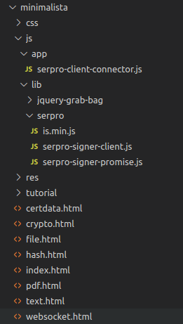
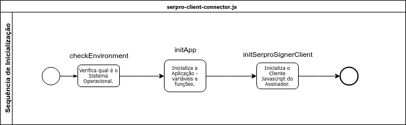
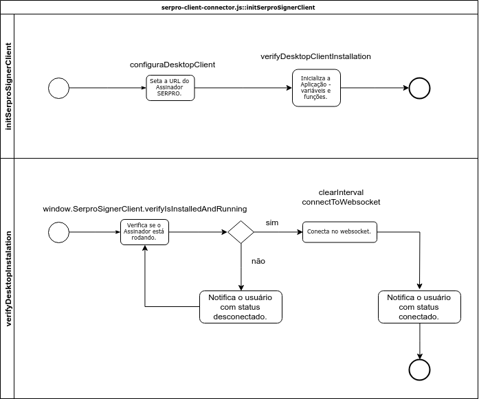

Assinador SERPRO Frontend - Tutorial de Adaptação
Este tutorial tem o objetivo de servir de referência para o desenvolvedor que tem a tarefa de adaptar uma aplicação web para assinar documentos utilizando o Assinador SERPRO. Aqui o desenvolvedor precisa ter conhecimentos básicos em HTML, Javascript, JQuery e Bootstrap.
Entendendo o Problema
Um Frontend em Javascript se comunica com o Assinador SERPRO, a aplicação que foi instalada no seu Desktop, através de comandos websocket. Você pode testar/simular essa comunicação na página websocket.org. Veja alguns exemplos aqui.
Em princípio, se você tem familiaridade com comunicação cliente-servidor em websocket, bastaria conhecer a API disponibilizada pelo Assinador SERPRO (a aplicação Desktop) para adaptar o código da sua página. Porém, como não é de conhecimento comum de todos os desenvolvedores, este exemplo disponibiliza a API de acesso e alguns exemplos de uso rotineiro.
Estrutura do Exemplo Minimalista
A API oficial de comunicação com o Assinador SERPRO compreende os seguintes arquivos:
- is.min.js
- serpro-signer-client.js
- serpro-signer-promise.js
onde, is.min.js identifica o Sistema Operacional, o arquivo serpro-signer-promise.js encapsula helper functions e o arquivo serpro-signer-client.js disponiliza a API. As principais funções da API são:
- sign
- verify
- attached

Os exemplos práticos constituem-se dos arquivos:
- crypto.html
- file.html
- hash.html
- pdf.html
- text.html
- websocket.html
As explicações estarão no início de cada arquivo. Se desejar, você pode fazer o download do projeto minimalista para modificar os exemplos conforme sua necessidade.
Se você não tiver um servidor web previamente instalado, uma sugestão é utilizar o Mongoose Web Server. É um executável que serve os arquivos na pasta onde ele é executado. Tem download para Windows, Linux e MacOS.
Como adaptar o Assinador SERPRO a sua Aplicação
Para adaptar a sua aplicação, considere como API oficial os seguintes arquivos:
O arquivo serpro-client-connector.js representa a aplicação. O seu sistema/site/app pode se basear nesse arquivo e adaptá-lo conforme necessidade. Para tanto favor destrinchar a lógica de funcionamento desse arquivo. Observe o diagrama:

O arquivo serpro.client.connector.js está encapsulado em uma função auto-invocada. Dentro dele, a função checkEnvironment verifica qual é o Sistema Operacional. Existem tokens legados em uso que apresentam problemas na assinatura dos hashes, dependendo do algoritmo e do SO. Para Windows utlizamos o SHA-256 e no Linux utilizamos o SHA-512.
A função initApp, utilizando JQuery, faz o binding dos identificadores nos elementos HTML com as funções que devem ser disparadas. Por fim, a função initSerproClient realiza a conexão com o Assinador SERPRO instalado no Desktop. Vejamos essa função em mais detalhes:

Pois bem, a função initSerproSignerClient seta a URL de conexão websocket e verifica se o Assinador SERPRO está rodando, para então poder inicializar a conexão websocket. A função verifyDesktopInstallation é um loop que checa se o Assinador está rodando. Caso negativo, o usuário deve ser instruído a instalar o Assinador. Caso positivo, o arquivo serpro.client.connector.js tenta conexão com o websocket. Essa tentativa pode gerar uma exceção. Caso essa excessão seja gerada, o usuário deve ser instruído a autorizar o navegador, isto é, aceitar o certificado. A ação que reseta esse aceite, para fim de testes durande a implementação, é a de limpar o histórico de navegação, conforme figura:
Entendendo que essa etapa de notificação ao cliente, de (1) aplicação não instalada e (2) navegador não autorizado é uma etapa extremamente importante da aplicação. Portanto, vamos revê-la em mais detalhes a seguir. É importante salientar que essa solução foi desenvolvida para o Exemplo Minimalista, e a sua aplicação deve se basear nela para solucionar este problema.
Notificações de Aplicação Não Instalada e Navegador Não Autorizado
Aqui vamos explicar como essas questões foram resolvidas no exemplo minimalista. Você pode e deve modificar o arquivo serpro-client-connector.js adaptando-o da melhor forma para a sua aplicação. Observe o diagrama:

Começamos verificando se o Assinador SERPRO está rodando:
serpro-client-connector.js
function verifyDesktopClientInstallation() {
window.SerproSignerClient.verifyIsInstalledAndRunning()
.success(function (response) {
clearInterval(tryAgainTimeoutVerify);
connectToWebSocket();
}).error(function (response) {
showStatusOff();
// Try again in Xms
clearInterval(tryAgainTimeoutVerify);
tryAgainTimeoutVerify = setTimeout(verifyDesktopClientInstallation, timeoutDefault);
});
}
Caso negativo, notificar o usuário de que o Assinador SERPRO precisa estar rodando. No exemplo, utilizando JQuery, escondemos as div de notificação, On e Off e mostramos apenas a de Off.
serpro-client-connector.js
function showStatusOff() {
var serverStatus = $('.js-server-status');
serverStatus.hide();
serverStatus.filter('.js-server-status-off').show();
}
Caso positivo, tentamos a conectar com o websocket.
serpro-client-connector.js
function connectToWebSocket() {
window.SerproSignerClient.connect(callbackOpenClose, callbackOpenClose, callbackError);
}
Se esse trecho falhar, uma excessão será gerada, e a função callBackError será invocada. Nessa função, o aviso de que o navegador precisa ser autorizado e o respectivo link são exibidos para o usuário.
serpro-client-connector.js
function callbackError(event) {
var serverAuthorizarion = $('.js-server-authorization');
serverAuthorizarion.show();
...
}
Por fim, se nada falhar, basta notificar o usuário de que o Assinador está rodando (On). No exemplo, esconde-se todas as notificações, exceto pela de status-on.
serpro-client-connector.js
function showStatusOn() {
var serverStatus = $('.js-server-status');
serverStatus.hide();
serverStatus.filter('.js-server-status-on').show();
var serverAuthorizarion = $('.js-server-authorization');
serverAuthorizarion.hide();
}
Isso conclui o tutorial de integração para o Exemplo Minimalista. Se ainda restarem dúvidas, encaminhe um email sobre o assunto correspondente, conforme descrito na seção de contatos.